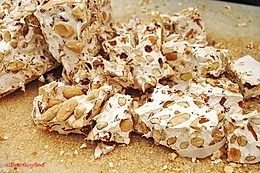

Torrone

Il torrone è un dolce tipico italiano principalmente natalizio; il suo nome deriva dal verbo latino torrēre che significa abbrustolire con riferimento alla tostatura della frutta secca che lo compone.
Ritorna sopra
Ritorna alla pagina principale